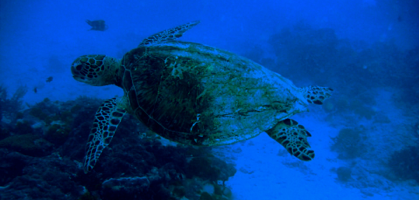
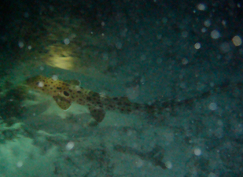
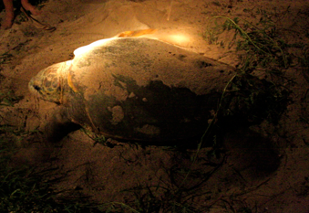

Heron Island

Store dykker dag
lørdag den 5. januar 2008

Vi vågner tidligt igen. Blå himmel, aftagende vind og håbe om nogle fede dyk. Jytte og Per er friske på at tage sig af pigerne, så Camilla og jeg kan dykke sammen - vild luksus!
Kl. 9 er der afgang til det første dyk. Vi er 7 dykkere, 6 mænd og Camilla. Alle er meget erfarne og vi sendes ud på et rimelig aggressivt strømdyk.
Der er væsentlig bedre sigt og mege mere at kigge på, men det er umuligt at stoppe op, for strømmen får os til at drøne afsted. Dykket går godt, og jeg må indrømme at jeg er ret stolt af Camilla. Det var bestemt ikke et tøsedyk, men hun var superrå, som eneste pige. Og der er anerkendende nik fra de andre dykkere.
Tilbage ved huset har mormor bygget den sejeste Robinson Crusoe hule/hytte på strande til Viola. Her kan hun lege i dagevis, og vi ser hende knap nok, før vi igen skal på dyk kl. 15. Nu er det blevet tid til de mere uerfarne dykkere, og Camilla og jeg venter i 12 minutter på havbunden før alle er trygge og klar til at dykke afsted. Der er megen uro, men vi får da set nogle skildpadder og hajer. Igen ikke det bedste dyk.
Det er dog for tidligt at opgive. Vi får meldinger om at andre har set kæmpestore Mantarays, og kl. 19.45 drager jeg afsted for 3. gang i dag - denne gang for at natdykke. Jeg fryser lidt, og er desuden lidt småtræt, men det er eneste chance mens vi er her, så afsted skal jeg. Vi er 5 dykkkere, bla. 2 unge piger.

Det mest fantastiske ved dykket er dog da jeg stikker hovedet op gennem havoverfladen efter det obligatoriske og igen småstressende 3 minutters safetystop. Det er skyfrit og månen er stort set væk, så man får hele himlen med tusindvis af stjerner lige i hovedet. Det er varmt og klart, og til at blive småreligiøs af. Allerhelst vil jeg blive liggende i vandet og nyde synet, men op skal vi.

Vi har været vidne til at af naturens mirakler. Det er meget stort, og små høje trisser vi tilbage langs vandet, mens det mest utrolige stjernetæppe hænger lige over hovedet på os. Hvilken dag!
Heron er udkklækningsø for de to store skildpadderacer: Green turtles og Loggerhead turtles. Det betyder at man ser dem dybt nede, i strandkanten og på stranden. Altid et fascinerende syn.